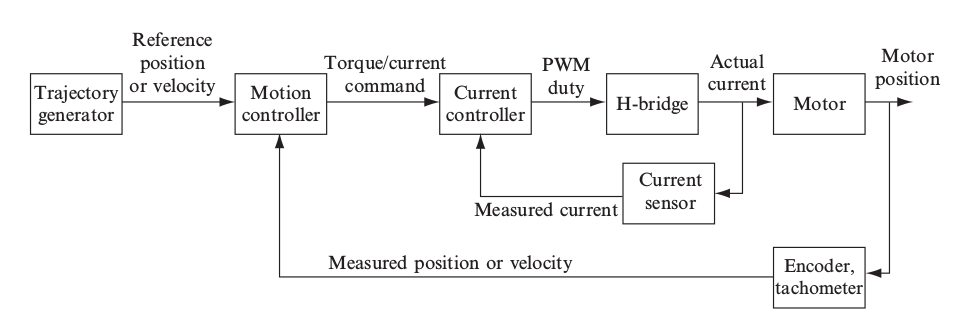

Position Control of a Brushed DC Motor
Mar 2018
Controlling the position of a DC motor is the building block for robotics systems.
This project uses a PIC32 microcontroller (on an NU32 board) for the position control and the interface is developed in Matlab as a menu i.e. a list of commands to choose from and send instructions to the PIC32.
The flowchart for the cotrol system is shown below.
- The motor is controlled by a PWM signal of frequency 20 KHz. This is generated by Timer3 on the pin OC1. The PWM cycle is governed by the OC1RS register value which is a fraction of the total PWM time period.
- The inner loop controls the current through the motor taking feedback from the current sensor. The current sensor uses nothing but a small resistance (~15 mOhm) to measure voltage drop and then calculate the current in the circuit. The control loop runs at a frequency of 5 KHz which is controlled by the Timer2.
- The outer position control lop runs at a frequncy of 200 Hz controlled by the Timer4. The feedback is given by the additional PIC16 (aka decoder) over SPI channel which read the encoder and sends the angle value to the PIC32. The position commands received from Matlab are taken by this loop.
- Matlab acts as the trajectory generator and also the scope which displays the final result after the trajectory has been executed.
Here is the video for the demo of the project.
The code for the project can be seen here.
The following charts depict the plots of desired(blue) vs. obtained(orange) values of current, position(step trajectory) and poistion(cubic trajectory) respectively. The 'x' axis is the time while 'y' axis is the value.
Current test:

Step Trajectory:

Cubic Trajetory:

Skills Involved
- C Programming
- PIC32 Microcontroller
- Interrupt Sequences
- PID Controller
- Electrical Filters and Amlpifiers